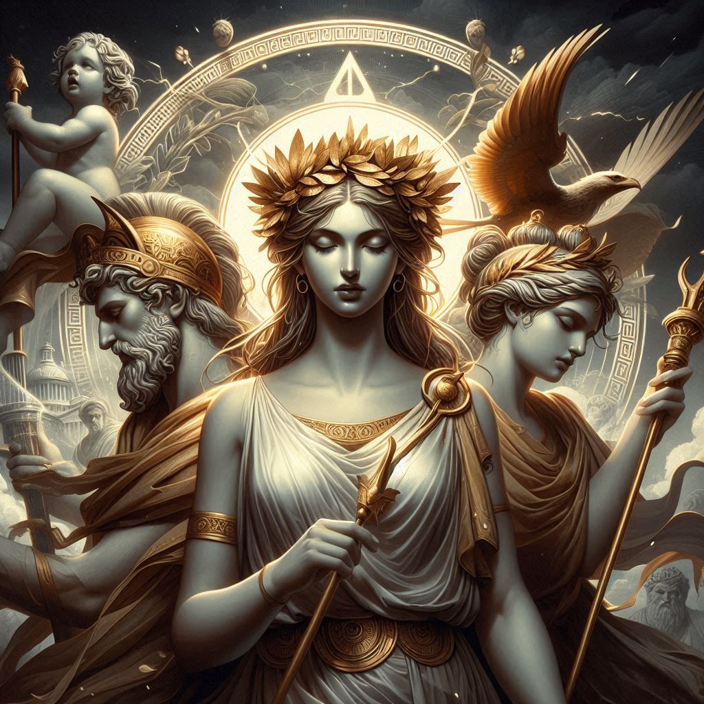
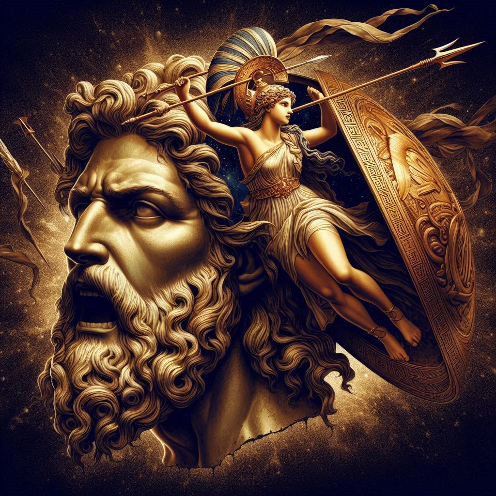
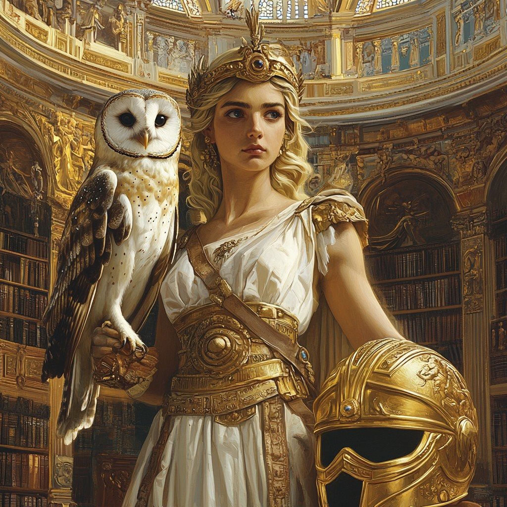
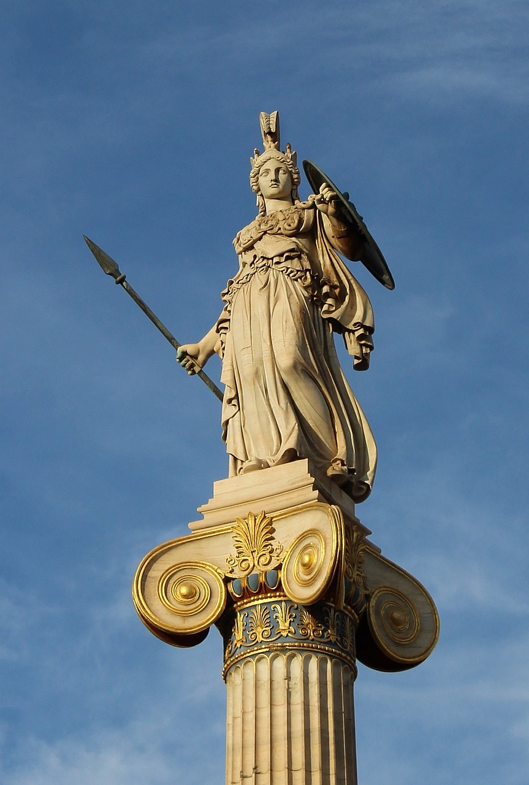
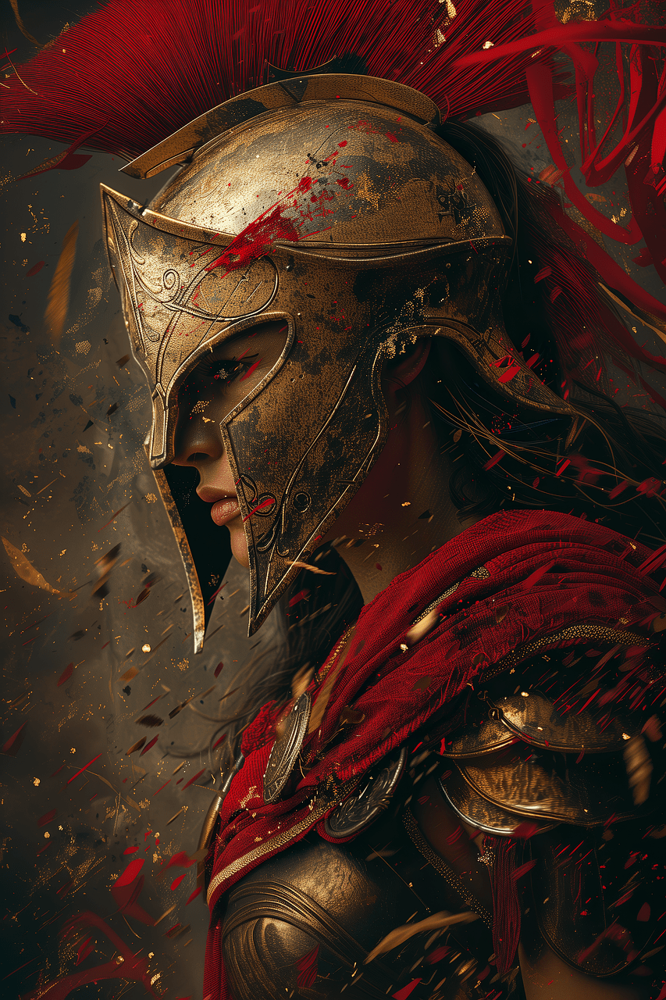
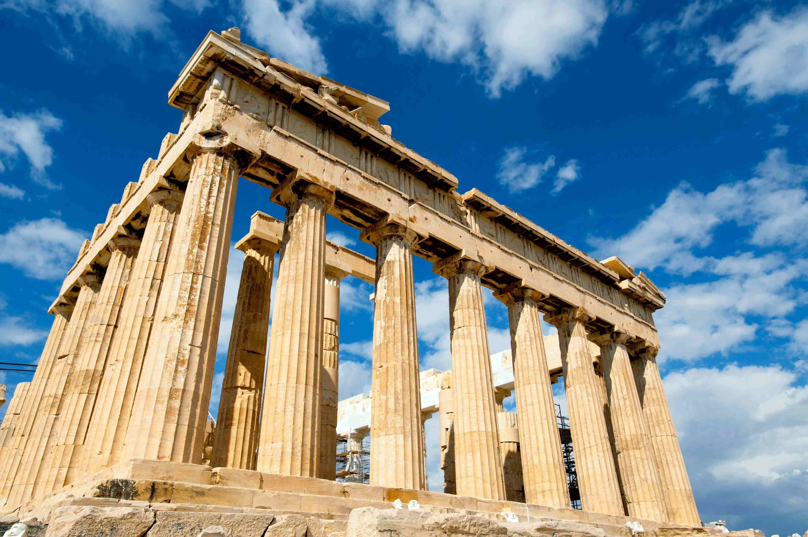
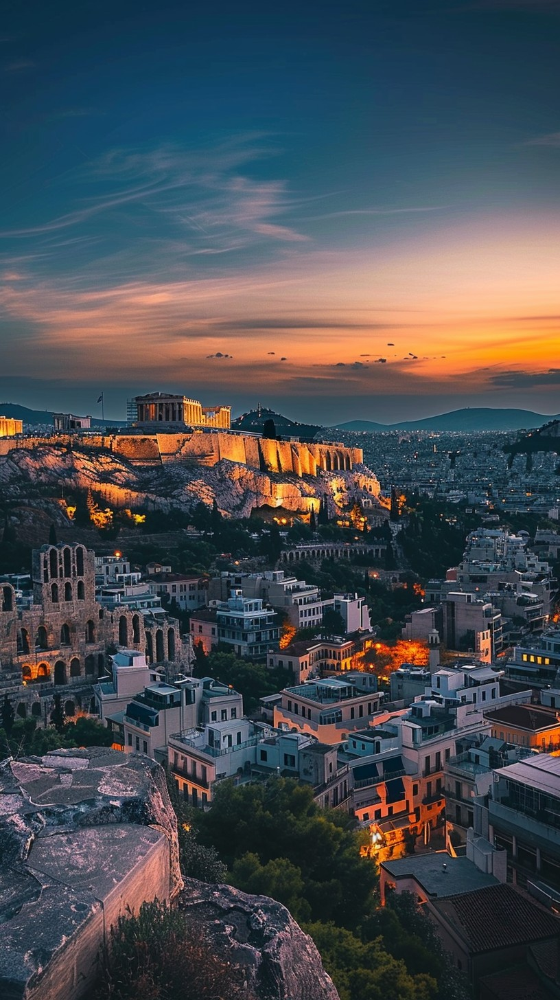
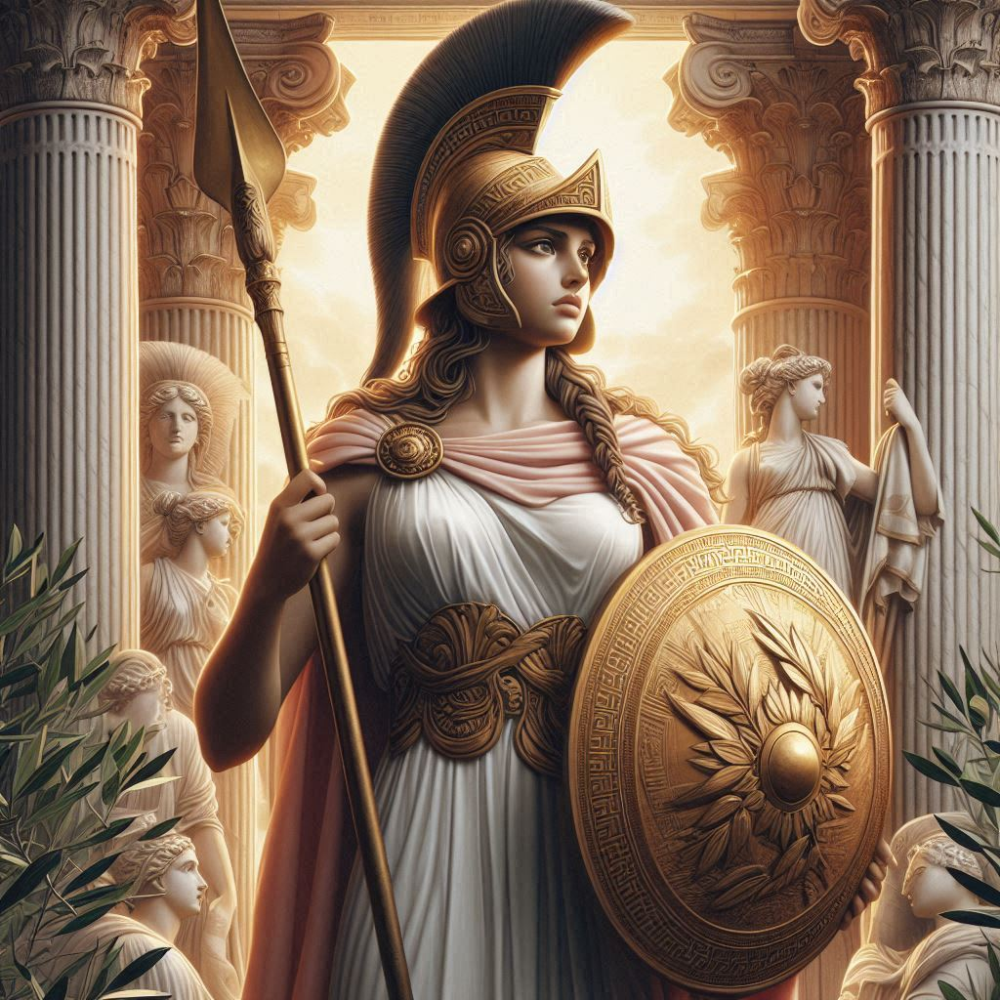
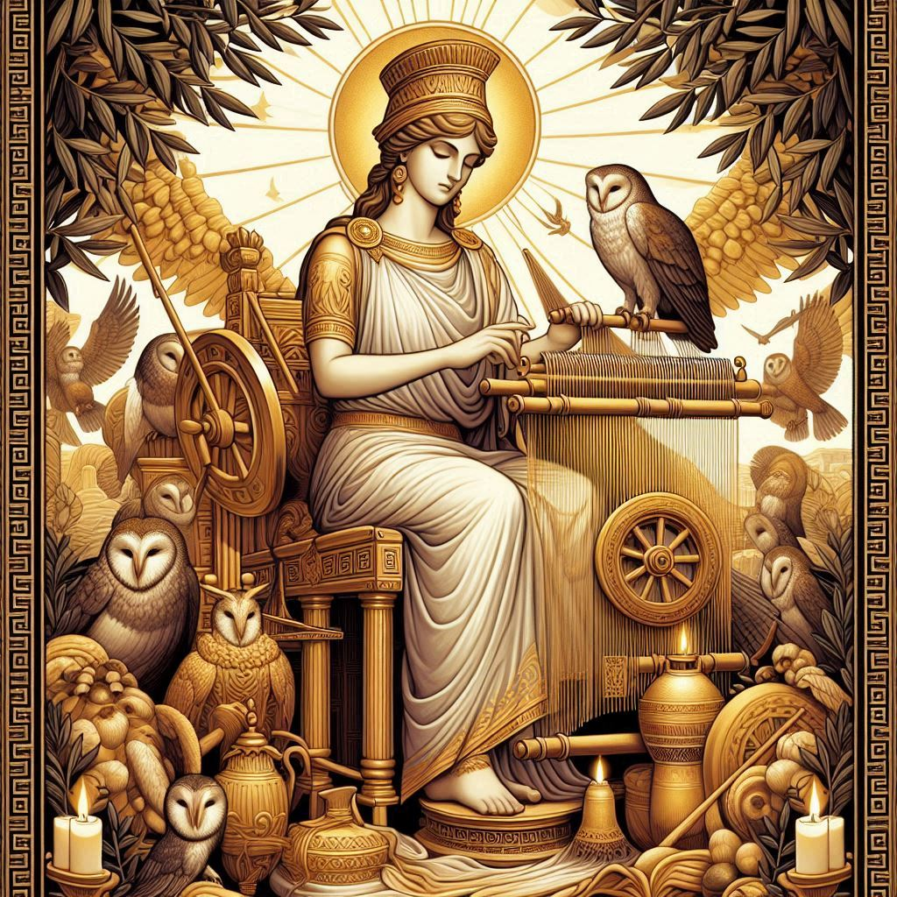
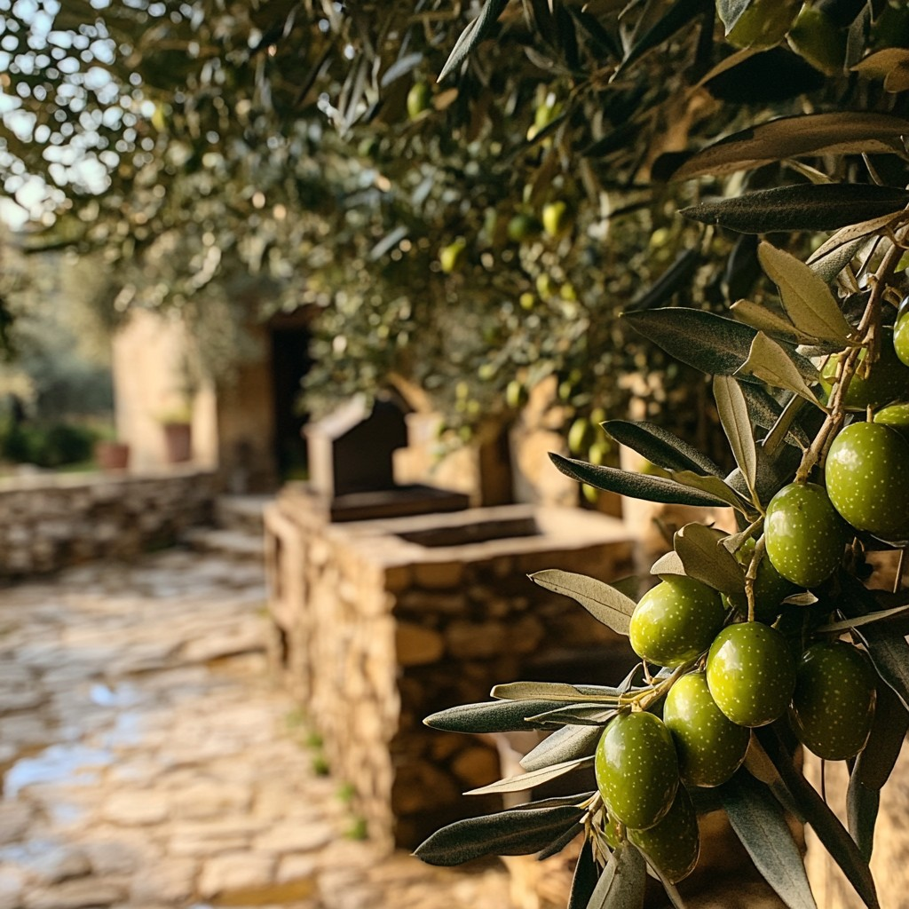

"A sabedoria está em ouvir antes de falar, e ponderar antes de agir"
Galeria de Fotos

Atena com seus pais, Metis e Zeus

Nascimento de Atena

A coruja é um dos simbolismos de Atena

Estátua de Atena

Atena guerreando

Parthenon, templo dedicado à deusa Atena

Cidade que a deusa Atena é protetora: Atenas

Deusa guerreira em seu templo

Atena, patrona da tecelagem, tecelando

Árvore símbolo de Atena: a Oliveira